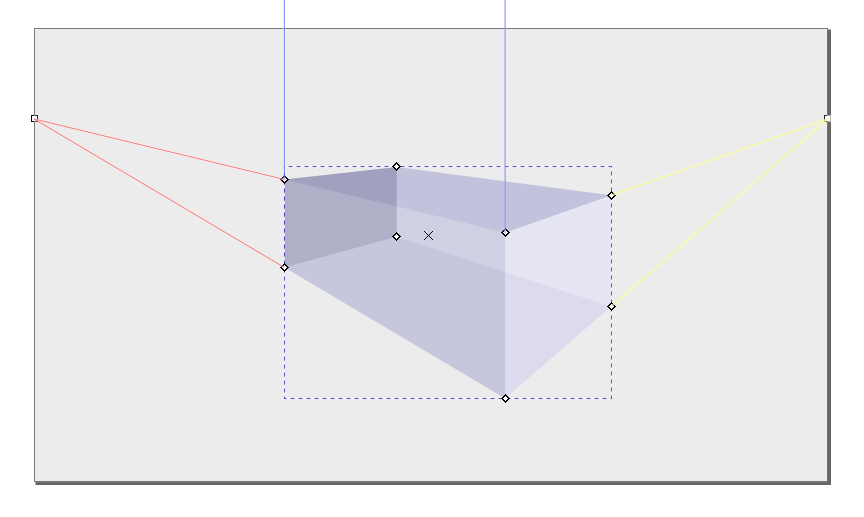

透视工具
快捷键：X 或者 Shift+F4
透视工具(  )，也叫三维透视工具，通过自动透视计算，可以用路径生成六面体透视效果图，那些建筑效果图或室内效果图可以应用此工具。此工具只能画出六面立方体，不能画球体或圆柱体等其它形状。
)，也叫三维透视工具，通过自动透视计算，可以用路径生成六面体透视效果图，那些建筑效果图或室内效果图可以应用此工具。此工具只能画出六面立方体，不能画球体或圆柱体等其它形状。
驿窗注：应用方向
此工具主要功能是自动透视计算，所以一个应用方向是建筑效果图或室内效果图。用户通过此工具设置好合适的透视点/消失点以后，再画出更多所需的透视立方体，然后把它们解除群组，保留需要的路径，再做为一个整体保存为纯svg路径，之后把这个整体路径导入到GIMP中，在GIMP中实现建筑效果或者室内效果。
驿窗注：第三方扩展
有一个专门用于Inkscape的第三方扩展，可以在Inkscape文档内配合透视工具自动调整位图来实现透视效果。
扩展名叫位图透视 Raster Perspective。需要注意的是，这个扩展要求路径按顺时针方向依次排列四个节点，且第一个节点位于左上，之后是右上、右下、左下，否则会导致位图旋转。
原理上，透视工具画出的三维透视图是由6个简单的四边形组成的一个群组。验证很简单，用选择工具右键点击一个三维透视图，选择解除群组，之后分别移动就可以分解为6个四边形：(左侧为分解前，右侧为分解后)

驿窗注：
三维透视图解除群组后，不再具有自动透视计算属性。
操作方法
用鼠标左键点击透视工具(
绘制三维透视图时，其实是绘制它的X-Y面，其它几个面是由inkscape计算生成的。而计算的依据，则是x、y、z三个方向的消失点的位置。
x方向、y方向、z方向
默认情况下，左右两侧的x方向消失点和y方向消失点位于页面的垂直页边框的中心位置；z方向的消失点在无穷远，用平行线表示。
x方向消失点和 z方向消失点
已经创建的三维透视图，消失点位置可以调整，比如把消失点从页面边框位置拖到更远的位置：x消失点水平向左移，z消失点水平向右移。上图中两个消失点的位置不在边框中心位置，因为已经被垂直向上移动。
按空格键可以临时切换到选择工具(
)，再按空格键则切换回透视工具。
创建三维透视图时如果按住Shift键，会调整z方向深度。
默认情况下，同一页面的所有三维透视图都使用相同的消失点。
因为所有三维透视图都使用相同的消失点，所以，在移动某一个消失点时，所有三维透视图都会发生变化。
如果上面的操作中希望仅调整某一个三维透视图的消失点，其它三维透视图的消失点不变，可以在移动消失点时按Shift键。
等距透视效果：把三个消失点均设置为无穷远(平行)，然后三个角度依次设置为150、90、30，就可以创建等距透视效果。
默认的三维透视图的颜色，一是可以通过首选项修改；二是可以直接在现有的透视图上，选择透视图群组内对象后，对组内对象进行修改。inkscape会记住此修改，后续再创建新的三维透视图时，会直接使用此修改结果来进行着色。
驿窗注：如何修改透视图群组内部的某个面？
因为每一个透视图都是一个群组，所以，单独修改透视图的某一个面就需要在群组内部操作。有两个方法：
方法一，进入群组内部：选中一个三维透视图，按Ctrl+Enter，此时已经进入群组内部，然后点击该透视图的某一个面即可。如果面与面上下重叠，可以在点击时按Alt键。方法二，在点击透视图的某一个面时按Ctrl键，这样可以直接选中透视图群组内的对象，不需要进入群组内部。
三维透视图示例，楼梯：
图 -4：左侧为三维透视效果，右侧无三维透视效果
上面楼梯的创建方法：
左侧：使用透视工具(
右侧：使用透视工具(
工具选项
手柄
三维透视对象默认一共有11个可以操作的手柄，如下图：
 三维透视对象的 11个手柄
其中：
透视图中心的叉，这个可以用来移动透视图。用透视工具(
透视图的8个角上有8个菱形，它们可以用来调整透视对象的长宽高，用透视工具(
两侧页面边框上的两个小正方形，分别用来调整x消失点和z消失点的位置，用透视工具(
因为y轴方向被设置为无穷远(平行)，所以没有显示手柄。如果不是无穷远(平行)，那么也会和另外两个方向一样，显示一个y消失点，这会是第12个手柄，同样可以用透视工具(
驿窗注：一点透视 | 二点透视 | 三点透视 | 等距透视
二点透视：透视图的XYZ三个轴中，消失点有二个 不是 无穷远，另外一个 是 无穷远。这也是inkscape默认的透视图参数。
三点透视：透视图的XYZ三个轴消失点全都 不是 无穷远。
等距透视：相当于无透视效果，透视图的XYZ三个轴消失点全都是无穷远。上面 图-4 中右侧的楼梯就是等距透视效果。

{kind=link}
{kind=link}
{kind=link}